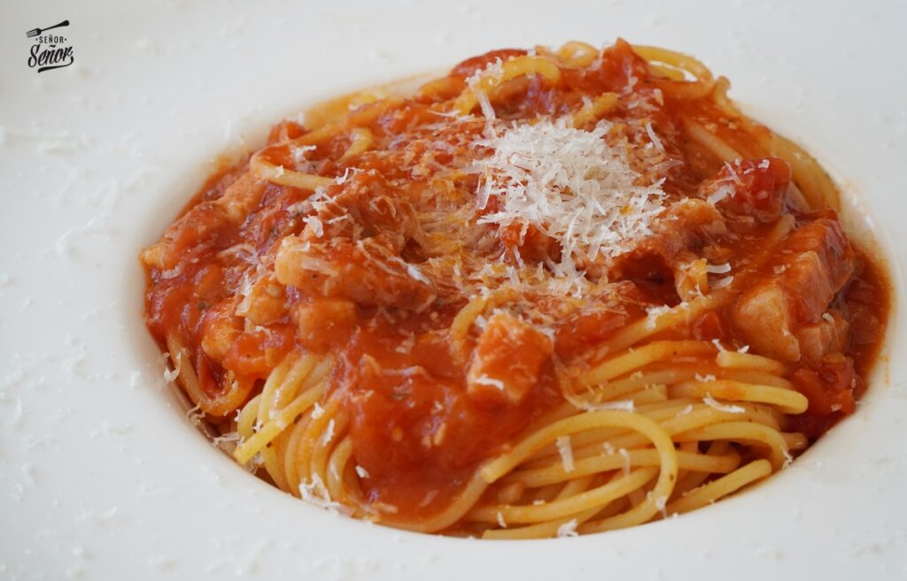

Ingredients de la pasta amatriciana
- 200 grams d'espaguetis
- Formatge pecorino ratllat
- 100 ml de nata per a cuinar
- 1 pot de tomaques en conserva
- 1 vitet o caiena
- Sal
- Sal
- Pebre negre molt
Com fer pasta amatriciana
- Comencem partint el guanciale o cansalada viada en tires i daurant-los en una paella sense oli. El mateix soltarà greix.
- Quan estiguen fets, podem retirar-los i reservar-los, però a mi m'agrada afegir-los les tomaques i cuinar-ho tot junt.
- Una vegada hàgem agregat el pot de tomaques, deixem cuinar durant uns 15 minuts a foc mitjà. Si t'està molt àcid pots posar-li un poc de sucre per a rectificar.
- Ahora cocemos los espaguetis y se los incorporamos cuando le falten un par de minutos.
- Acabem de cuinar els dos minuts els espaguetis en la salsa i servim amb formatge *pecorino per damunt. A vegades aconseguir formatge *Pecorino és difícil a Espanya, però pots substituir-ho per Parmesà o formatge manxec però cal indicar que la recepta original és amb formatge Pecorino.
